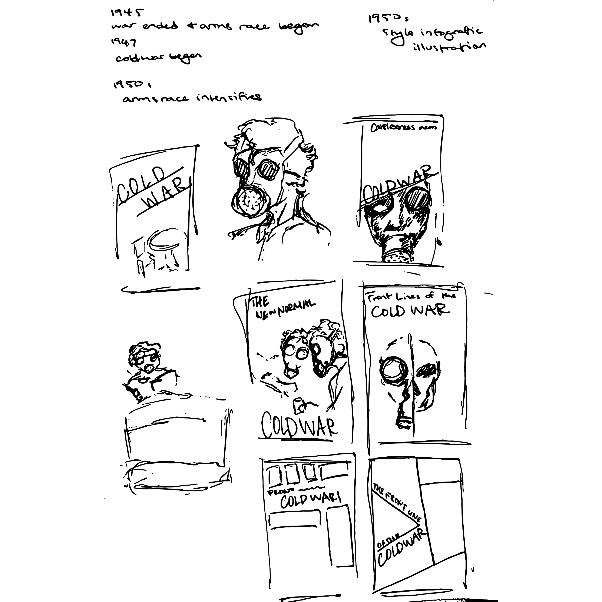
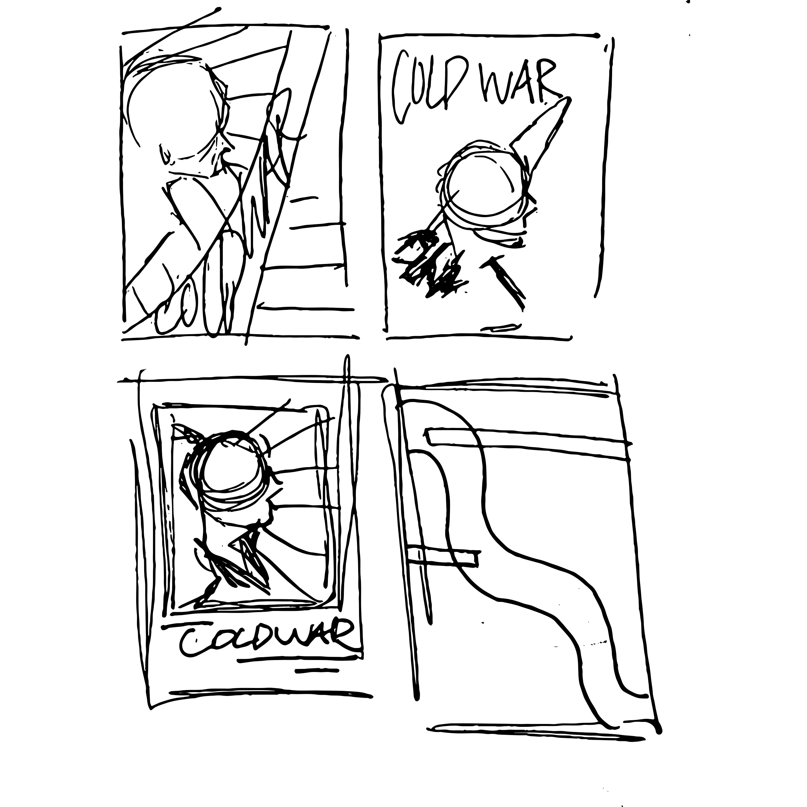
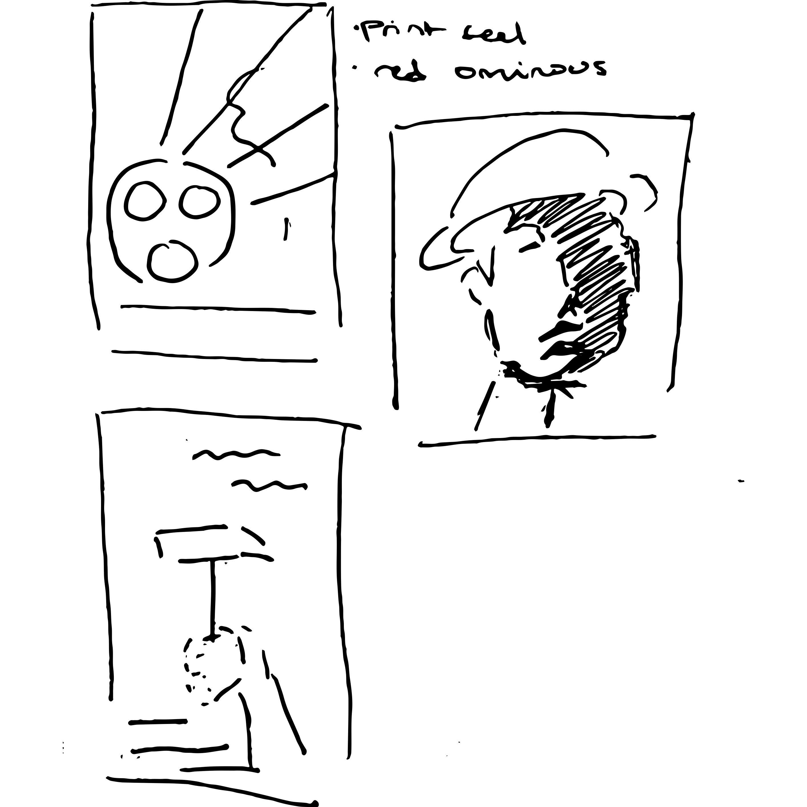
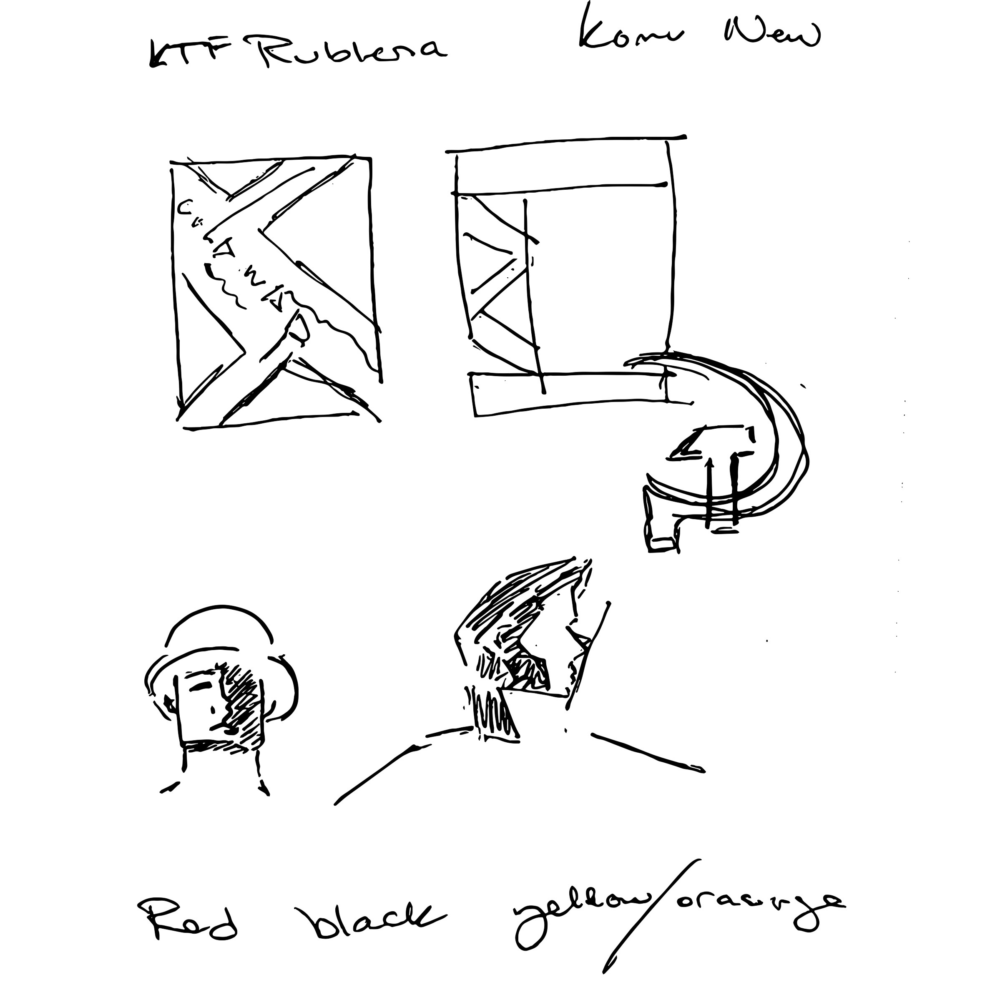
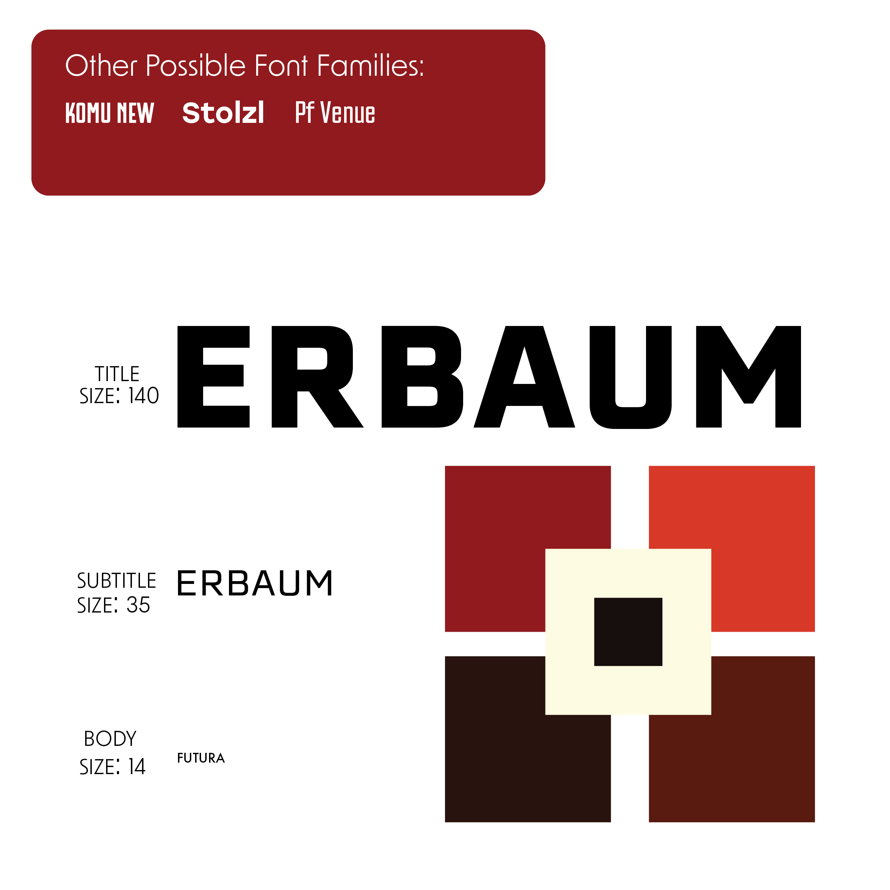
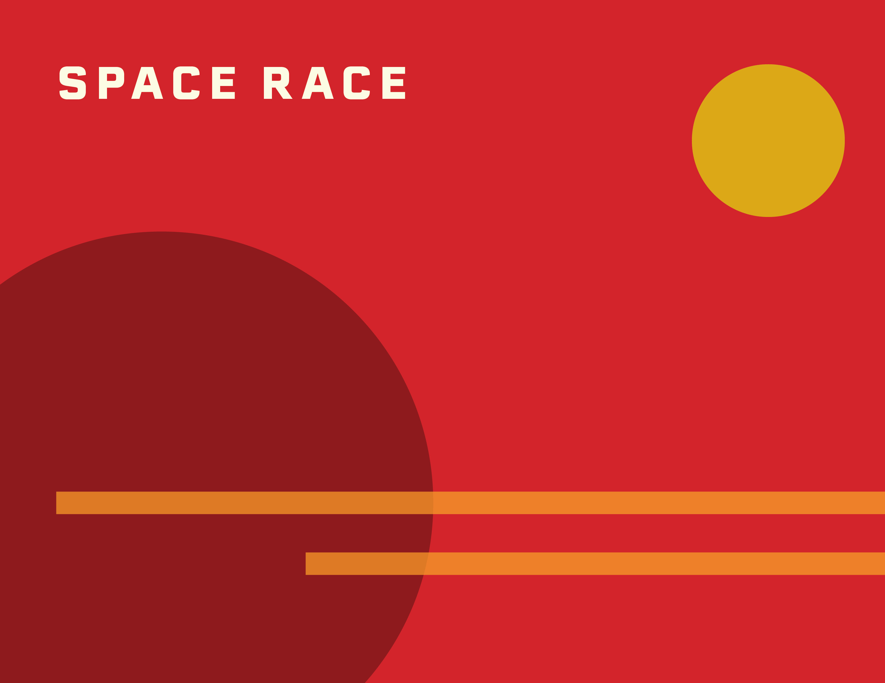
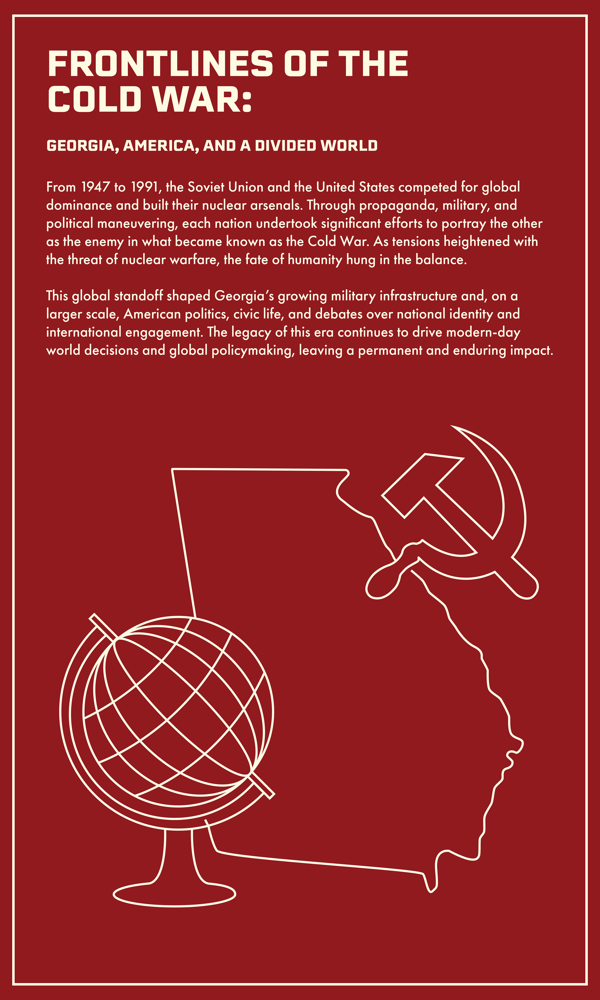
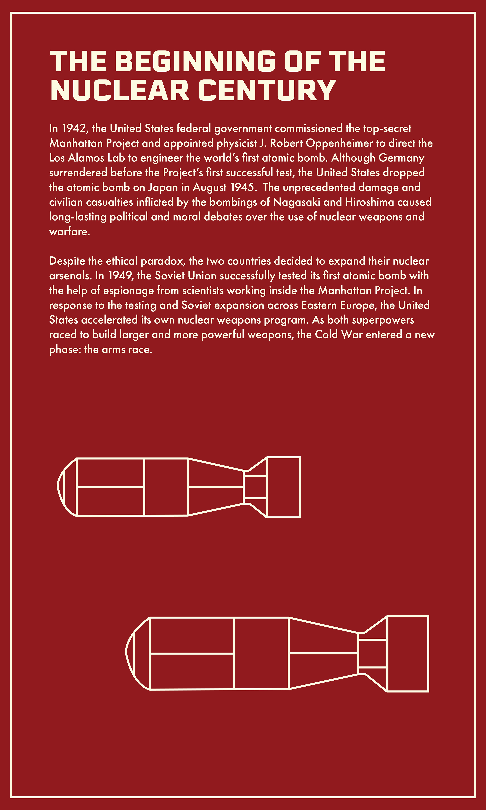

← All projects / Project 02
Exhibition graphics · Editorial
The Frontlines of the Cold War
A cohesive graphic system for a history exhibition.
- Discipline
- Exhibition design
- Focus
- Visual systems, editorial, environmental graphics
- Project
- 02 / 08
Overview.
The Russell library was in need of digital and print graphics for their exhibit “The Frontlines of the Cold War: Georgia, America, and a World Divided. The client requested designs that were inspired by Cold War propaganda that created a strong and domineering feeling to convey the emotions felt during this time period. Each aspect needed to follow a strict system that was accessible and cohesive, ensuring visitors could easily navigate the exhibit without losing the visual identity throughout.
Exhibition
Signage.
The exhibit's signage showcases the visual system as it is translated across different sections of the exhibit while holding true to its primary identity.

Process:
Sketches.
Utilizing the information gathered in my research I explored a plethora of different directions, Soviet Propaganda, Geometric imagery, American Propaganda, and photomontage. I sketched all of my ideas prior to taking my selected directions into Adobe to explore further.




Process:
Iteration.
Taking inspiration from my previous sketches I made iterations of the primary graphic for the exhibit. Experimenting with Type, color, and imagery that followed the geometric propaganda seen in the soviet union. However, the overarching issue with these was the lack of overt American representation that was necessary for the final product.


Process:
Signage.
Prior to starting work on text panels I gave myself some clear outlines, I forged a guide on color palette, font choices, and font sizing. I experimented with more simplistic, geometric visuals as well as more complex versions inspired by safety pamphlets on atomic protocols.



Process:
Signage.
I eventually landed on a more simplistic and straightforward design to enhance the accessibility, structure, and general ominousness of the time period.

